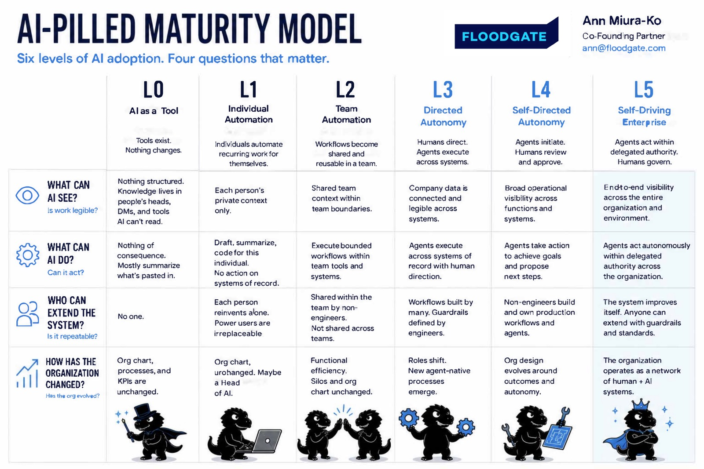

Where does your organization really sit on AI?
A one-minute CxO diagnostic · July 7, 2026 · held under Chatham House rules
- A personalized report; your operating level, your single bottleneck, and the highest-leverage move to make next.
- The L0–L5 levels take-away (PDF); Floodgate's framework for measuring AI capability, not activity. Yours to download at the end.
Pick the answer closest to where you are today; the A–D options sketch levels, not exact descriptions.
Unlock your full report
See the specific moves for your bottleneck, and take the L0–L5 take-away with you.
- Your personalized report; prioritized next move, a 90-day target, and the patterns specific to your answers
- The downloadable L0–L5 levels take-away (PDF), and how the AI-native companies set the bar
- A Markdown action brief to hand to your AI transformation lead — or an AI agent — to turn into a plan
Please enter a valid email to unlock your report.
Your bottleneck and next move
Where this sits vs. the field
What the frontier actually looks like
These are real, named AI-native companies; the bar the startups you may advise or board are setting.
- Legibility: a customer-intelligence agent that folds sales calls, support tickets, session recordings, and survey data into one queryable layer; "which pain points are rising, in which segment, and did the last release move them?" is one query, not a meeting.
- Executable: policy agents that auto-deny out-of-policy spend from an uploaded travel policy; security agents that detect, validate, fix, and file the change, finding ~100 vulnerabilities in six days with zero humans in the loop.
- Extensibility: an L&D lead who built a training simulator in 15 minutes; a finance person who built a contract reviewer saving 45 minutes per contract; none of them engineers.
- Structural: companies running zero product managers at 50 people, or no new hires until their next round; they name the roles AI displaced rather than gesturing at "running lean."
- Frontier: an autonomous system, fed no question, that surfaced $2.46M in unapplied credit notes traced from one customer complaint; multiple findings actioned by leadership. As of mid-2026, roughly the leading edge of what exists.

Open full size ↗The action brief is a Markdown file summarizing where you are and how to reach the next level — built to hand to whoever runs your AI transformation, or to an AI agent, to turn into a sequenced plan with quick wins.
Framework: the AI-Pilled Organization Maturity Model (Floodgate). Self-administered; re-take quarterly and track the direction and which bottleneck is limiting you, not the absolute number. For multi-business-unit groups, run each unit separately.